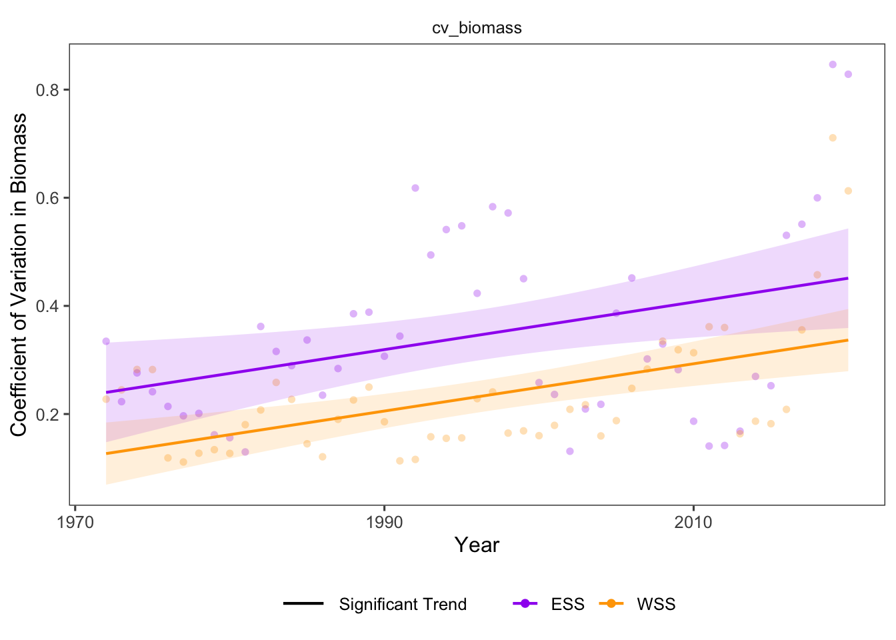

19 Stability & Resistance: Stability of Community Biomass
Data Type: Tabular Data (within eco_indicators)
Spatial Scope: Maritimes
Duration 1970-2022
Source: Bundy et al. 2017
19.1 Introduction to Indicator
The coefficient of variability (CV) in biomass describes the temporal variability in biomass relative to its mean, here estimated in a 5-year moving average (Bundy, Gomez, and Cook 2017). Using the inverse of CV, a decrease in this indicator represents greater biomass variability from year to year in the community, and an increase represents lower biomass variability.
19.2 View Data
library(tidyr)
library(plotly)
library(stringr)
plotly_df <- data@data %>% inner_join(global_cols3)
p <- plot_ly()
regions <- unique(plotly_df$region)
for(r in regions){
df_sub <- plotly_df %>% filter(region == r)
group_name <- unique(df_sub$region_group)
linewidth <- unique(df_sub$linewidth)
linetype <- unique(df_sub$linetype)
p <- p %>%
add_lines(
data = df_sub,
x = ~year,
y = ~CVBiomass_value,
name = r,
legendgroup = group_name,
legendgrouptitle = list(text =
ifelse(group_name == "ESS",
"Eastern Scotian Shelf Zones",
"Western Scotian Shelf Zones"
)
),
line = list(color = unique(df_sub$color),
dash = linetype,
width = linewidth),
text = ~paste0("<b>",region,"</b>: ",round(CVBiomass_value,2),"°C"),
hoverinfo = "x+text"
)
}
p %>%
layout(
title = "Stability of Community Biomass",
xaxis = list(title = "Year"),
yaxis = list(title = "1 / Coefficient of Variation in Biomass", fixedrange = TRUE),
hovermode = "x unified",
legend = list(
tracegroupgap = 5,
groupclick = "toggleitem",
itemdoubleclick = FALSE
)
) %>%
config(displayModeBar = FALSE)Figure 19.1: Coefficient of Variation of biomass in Scotian Shelf Regions; 1970-2022. Use dropdown box to select a target trophic level, and click legend to toggle regions.
19.3 Summary and Trends
Trend and summary values are automatically generated; data were last updated on marea package install on 2026-02-10
Despite variability between individual NAFO regions (Fig. 19.1), the inverse coefficient of variation in biomass significantly decreased in the Western Scotian Shelf and non-significantly decreased in the Eastern Scotian Shelf throughout the sampling span (Fig. 19.2).

Figure 19.2: Overall CV Boimass trends Eastern and Western Scotian Shelf.
19.3.1 Summary Table by Region and Functional Group
Trends in the coefficient of variability of biomass in each NAFO region within the Eastern and Western Scotian Shelf (1970-2022) are shown in the table below (Table 19.1).
| variable | Eastern Scotian Shelf Biomass Trends (kg/year) | Western Scotian Shelf Biomass Trends (kg/year) |
|---|---|---|
| CV Biomass |
4VN: -2.46e-02 ∗ 4VS: -2.33e-02 4W: 2.60e-04 ESS: -1.84e-02 |
4X: -6.41e-02 ∗ WSS: -5.20e-02 ∗ |
19.4 Relevance to Research and Stock Assessments
Decreases in inverse coefficient of variability represent increases in the variability of biomass in the community from year to year, and lower ecosystem stability in the marine community (Bundy, Gomez, and Cook 2017) as community biomass becomes more volatile or exhibits “boom and bust” patterns from year to year.
19.5 Variable Definitions
| variable | description | unit |
|---|---|---|
| year | Year of data collection | |
| region | Region over which data are summarized | |
| CVBiomass_value | Coefficient of variation in Biomass |